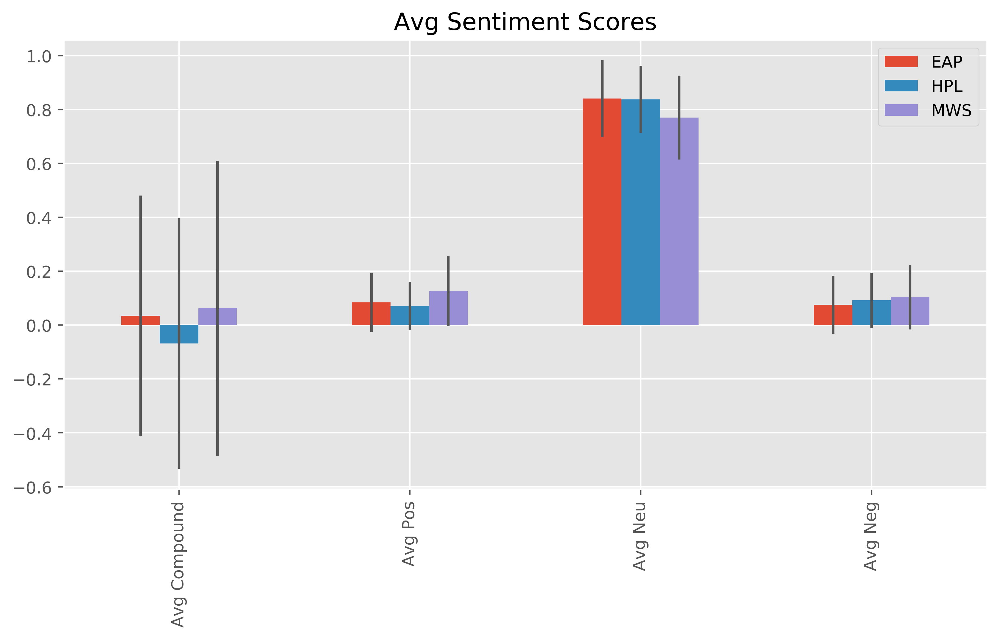

Although there are large variations in the sentiments for each author, an analysis of variance
shows that there is a statistically significant difference between the authors average sentiment scores.
There are particularly evident and statistically significant differences between the compound and neutral scores.